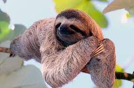

Ленивцы обладают цепкими, очень сильными пальцами, благодаря которым они с легкостью подолгу висят на деревьях. Средняя масса особи составляет 4-6 кг, в то время как длина тела достигает 60 см. Всё тело животного покрывает шерсть коричнево-серого цвета. Ленивцы имеют голову и хвост маленького размера.
В основном ленивцы питаются древесными листьями, хотя могут при случае съесть насекомое или мелкую ящерицу. Листья трудно перевариваются и обладают очень низкой калорийностью и питательной ценностью.
